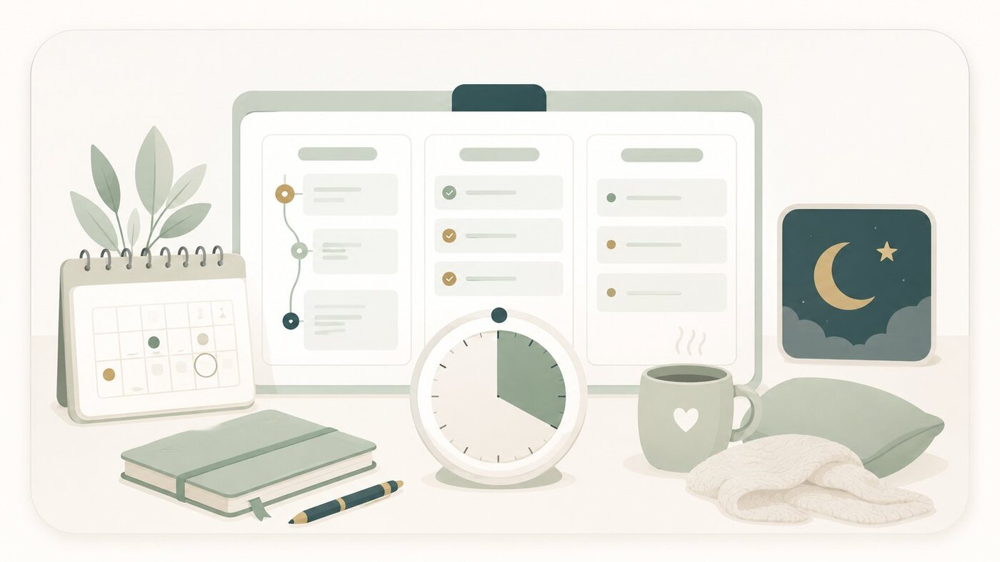

If you have ADHD, you’ve probably been told to “just try harder” or “be more disciplined.” That advice misses the point. The students I work with don’t need more willpower. They need systems that do the remembering and prioritizing for them, so their brain is free to do the actual learning. Here are the ones I come back to most.
Externalize everything into one place
An ADHD brain is brilliant at thinking and notoriously unreliable at holding details in working memory. So the goal is to get everything out of your head and into a trusted external system. I recommend a tool like Notion because it can hold three layers of planning in one place:
- Long-term: a semester or term view with every exam, project, and deadline. This is your map.
- Short-term: a weekly view where you pull the next week’s priorities out of the long-term plan.
- Daily: a short, realistic list of what actually happens today, ideally three to five concrete tasks, not twenty.
The magic isn’t the app; it’s having one source of truth you can trust, so you’re never relying on memory to know what’s next.
Work in short, timed sprints (Pomodoro)
Starting is often the hardest part, and a blank stretch of “study time” feels impossibly large. The Pomodoro method shrinks it: work for a focused block (many people start with 25 minutes), then take a real 5-minute break, and repeat. A timer turns “study chemistry” into “just do one 25-minute round,” which is a much easier door to walk through. There are plenty of Pomodoro apps that handle the timing and breaks for you. Find one you like and let it run the clock so you don’t have to.
Why this works for ADHD: short sprints create urgency and a clear finish line, breaks prevent burnout, and the timer becomes an external source of structure, so focus doesn’t depend on you summoning it from scratch every time.
Build in “off days” before you need them
This is the piece almost everyone forgets, and it’s the most important one. ADHD weeks are not uniform. Some days the focus simply isn’t there. If your schedule assumes every day is a good day, then one off day knocks everything out of alignment, and that’s usually when people abandon the whole system.
So plan for off days on purpose. Leave intentional white space in your week, keep your daily lists short enough that a slow day doesn’t create a backlog, and treat a low-energy day as a normal, expected part of the plan rather than a failure. A schedule that bends doesn’t break, and a system you can return to after a rough day is infinitely better than a perfect one you abandon.
Reduce friction so starting is easy
Every extra step between you and a task is a place to get stuck. Lay out materials the night before, keep your Notion daily list open and visible, and make the first action almost embarrassingly small (“open the problem set” rather than “finish the problem set”). Lower the bar to begin, and momentum usually follows.
The takeaway
You are not the problem, and you don’t need to white-knuckle your way through school. With one place to hold your plans, short timed sprints, planned-for off days, and less friction to start, studying gets a lot more manageable. These systems are most of what I build with students in ADHD-friendly academic coaching in Madison and online, and we tailor them to how your specific brain works.